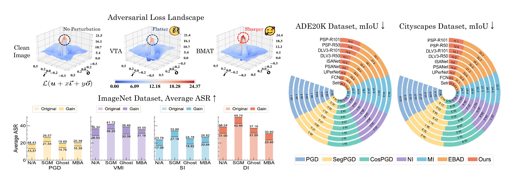
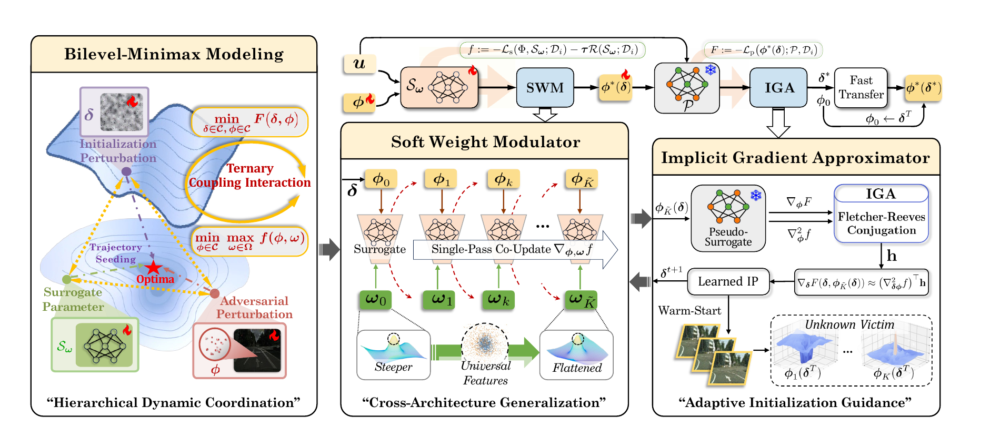
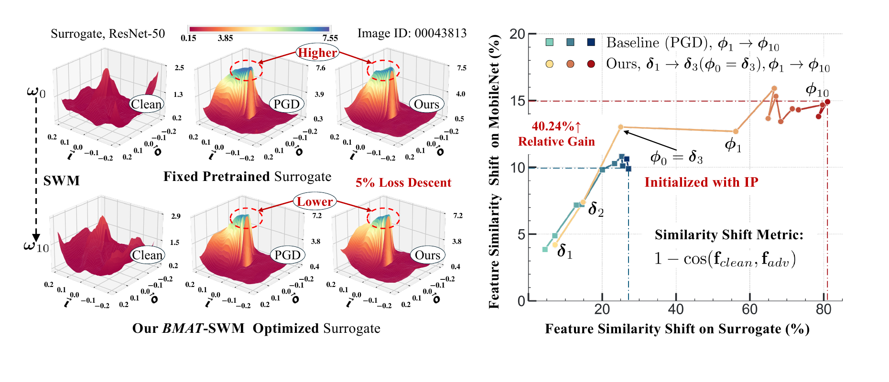
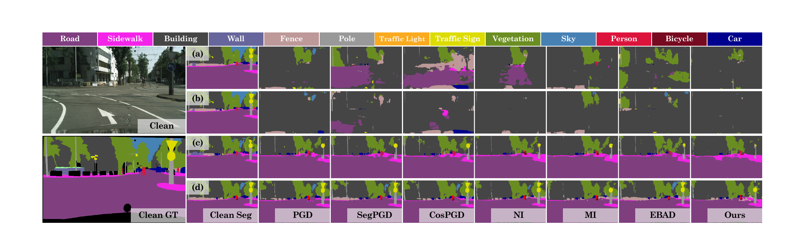
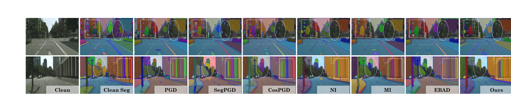

ECCV 2026
Learning with Bilevel-Minimax Optimization for Efficient and Reliable Transfer Attacks
1The University of Hong Kong2Dalian University of Technology3The Hong Kong Polytechnic University
Fast BMAT has been integrated into TransferAttack, a framework that brings together a wide range of transfer-based adversarial attacks.

Loss landscape. In contrast to a flatter but weakly transferable region obtained by VTA, BMAT finds a direction with a stronger transferable loss response.
Classification. The grouped bars summarize average ASR improvements over the CNN, robust-ensemble, and Transformer victim families.
Segmentation. The radial plots report mIoU reductions across Cityscapes and ADE20K; lower values indicate stronger transfer attacks.
Overview
BMAT learns how to seed an attack trajectory, rather than optimizing a perturbation against a fixed surrogate alone.
It couples initialization, perturbation generation, and surrogate adaptation in a finite-step bilevel-minimax procedure. The resulting attack improves transfer across image classification, semantic segmentation, and a prompt-free Segment Anything Model evaluation.
Method
Coordinate the entire attack trajectory.

Figure 2. BMAT learns an initialization perturbation at the outer level while the inner response jointly adapts perturbations and surrogate soft weights. Fast BMAT retains this learned seed and uses standard projected sign updates for efficient attacks.
SWMJointly adapts perturbations and soft surrogate weights to seek gradients that generalize beyond a fixed surrogate.
IGAUses an implicit hypergradient to learn an initialization perturbation without unrolling the complete inner optimization.
Fast BMATUses the learned seed for efficient standard sign/projection updates at deployment time.
Image Classification
Consistent gains across victim families.
ImageNet ASR under a ResNet-50 surrogate. Each value aggregates the camera-ready results over four CNN, three robust-ensemble, or three Transformer victims.
| Base attacker | CNN (4) | Ensemble (3) | Transformer (3) | Overall (10) | |||||
|---|---|---|---|---|---|---|---|---|---|
| Base | + BMAT | Base | + BMAT | Base | + BMAT | Base | + BMAT | Gain | |
| PGD | 20.09 | 28.02 | 8.43 | 11.58 | 9.35 | 12.50 | 13.37 | 18.43 | +5.06 |
| MI | 31.22 | 42.45 | 13.05 | 21.09 | 14.95 | 19.49 | 20.89 | 29.15 | +8.26 |
| VMI | 41.19 | 51.25 | 19.34 | 27.61 | 20.83 | 25.20 | 28.53 | 36.34 | +7.82 |
| SI | 25.98 | 33.29 | 10.51 | 13.00 | 12.38 | 14.93 | 17.26 | 21.70 | +4.43 |
| TI | 22.11 | 28.66 | 9.29 | 12.05 | 9.47 | 11.13 | 14.47 | 18.42 | +3.95 |
| DI | 42.28 | 48.89 | 19.03 | 21.50 | 16.85 | 19.07 | 27.68 | 31.73 | +4.05 |
BMAT-enhanced results. ASR (%) ↑; higher is better. Gain is in percentage points. The complete 24-variant table is reported in the paper.
Optimization Dynamics
Coordinated updates improve transfer.
SWM smooths sharp, surrogate-specific regions, while IGA moves the initial perturbation toward an attack trajectory with a stronger feature shift.

Figure 3. SWM locally moderates the surrogate landscape and IGA moves the initialization perturbation toward a trajectory with a larger feature shift, which is associated with stronger cross-model transfer.
Semantic Segmentation
Transfer extends beyond classification.
Cityscapes mIoU ↓; lower indicates a stronger attack. BMAT is evaluated with CNN and Transformer surrogate structures against ten cross-model victims.
| Surrogate | Method | CNN victims mean mIoU | Transformer victims mean mIoU |
|---|---|---|---|
| FCN | MI | 3.94 | 33.28 |
| MI + BMAT | 3.08 | 32.47 | |
| DLV3-R50 | MI | 4.71 | 38.19 |
| MI + BMAT | 2.54 | 35.57 | |
| Segformer | MI | 23.34 | 20.52 |
| MI + BMAT | 11.85 | 20.11 |
BMAT-enhanced results. Averages are computed from the full Cityscapes table in the paper.

Foundation Model Transfer
Attacking SAM without prompts.
Adversarial examples are crafted on a Segformer surrogate and transferred to SAM without prompt guidance. BMAT causes evident failures in building boundaries, windows, and road-side structures.

Citation
BibTeX
@inproceedings{liu2026learning,
title={Learning with Bilevel-Minimax Optimization for Efficient and Reliable Transfer Attacks},
author={Liu, Yaohua and Guo, Yifan and Gao, Jiaxin},
booktitle={European Conference on Computer Vision},
pages={680--701},
year={2026},
organization={Springer},
doi={10.1007/978-3-032-37196-6_37}
}